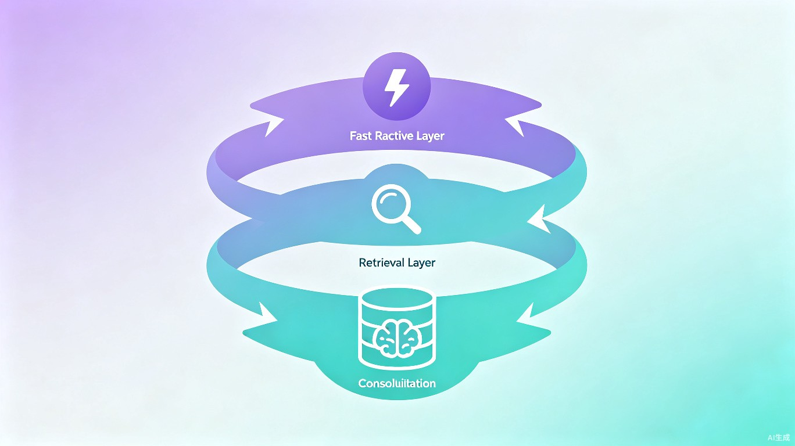
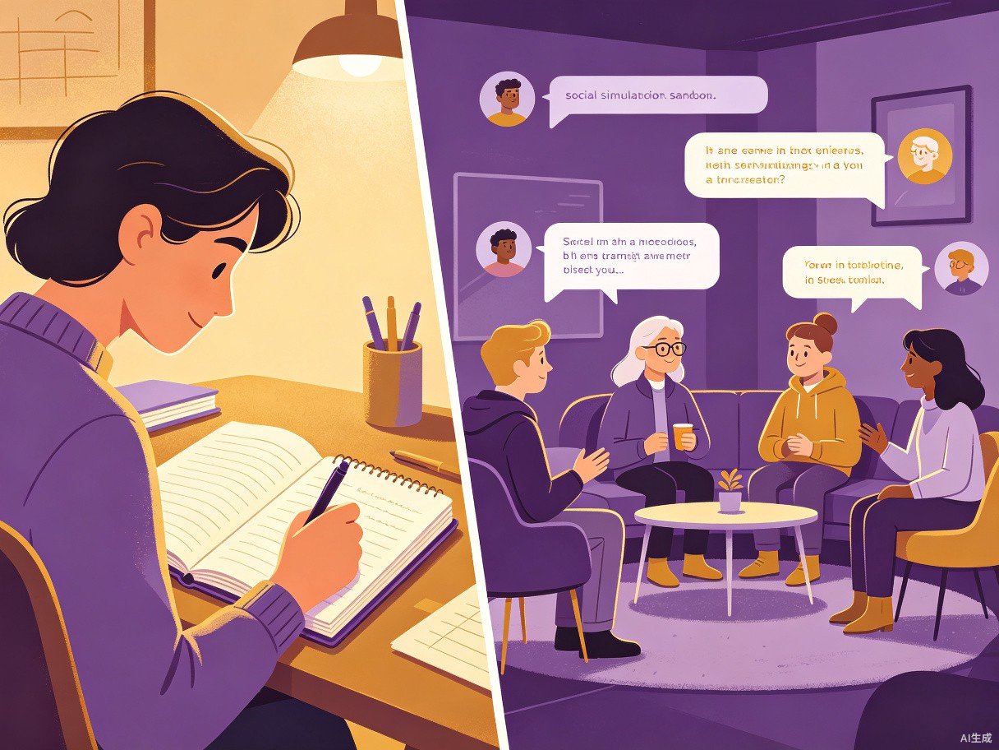

1 创意名称与介绍
Atrium OS 心房 — 会"记住你"的 AI 日记伴侣
想解决什么问题：传统日记写完即封存，没有人回顾、没有人理解。日常生活中涉及大量人际关系，人类很难系统化地梳理和管理。面对棘手的社交场景，我们缺少一个安全的环境进行预演。而现有 AI 对话工具普遍缺乏持久记忆，每次对话都从零开始。
为什么会想到做这个：灵感来源于对"记忆"本质的思考——如果 AI 能像挚友一样，真正记住你说过的话、理解你的社交世界、在对话时带入共同的回忆，那人与 AI 的关系将从"工具"升级为"陪伴"。日记是最私密的记忆载体，将它与 AI 结合，是构建真正个性化数字伴侣的最佳切入点。
大概是什么产品：Atrium OS 是一款本地化部署的 AI 日记伴侣系统（Web 应用），融合日记记录、知识图谱构建、AI 共情对话和社交沙盘推演四大核心功能，数据完全存储在用户本地，保障隐私安全。
2 目标用户及痛点
面向哪些用户
日记写作者
有长期写日记习惯，希望日记不只是记录、更能产生价值的人
内省型用户
希望通过反思自我、梳理人际关系来提升情商与社交能力的人
隐私敏感者
不信任云端 AI 服务，希望数据完全留在本地的技术爱好者
在什么场景下使用
- 每日记录：写完当天的日记后，AI 自动提取人物、关系和事件，构建个人知识图谱
- 情感倾诉：遇到烦心事时，打开 AI 对话面板，它已"记住"你最近的日记和社交动态，能给出有温度的回应
- 社交预演：明天要和上司谈加薪？选择"沙盘推演"，AI 模拟上司的反应，帮你在安全环境中练习对话策略
- 关系回顾：在知识图谱页查看自己与每位朋友、家人的关系时间线，回顾共同经历
当前痛点
没有 Atrium OS 时
日记是静态文本，写完不会主动帮你梳理人物关系；想练习棘手对话只能靠想象或找朋友角色扮演，既尴尬又缺乏隐私；AI 聊天工具每次都"失忆"，无法建立长期情感连接。
有了 Atrium OS 后
日记自动变为"活的记忆"，AI 持续学习你的社交世界并给出个性化回应；沙盘推演让你随时预演任何社交场景；三层记忆架构确保 AI 跨会话也能"记住你"。
3 核心功能与架构
Atrium OS 的核心逻辑流采用多管道串行处理架构，以单个 AI Agent 为中枢，驱动四条并行处理链路：
日记写入链
保存日记 → 自动提取知识图谱三元组 + LLM 结构化实体提取 → 智能消歧去重 → 分拣到每个角色的独立档案
共情对话链
用户输入 → NPC 检测 → 档案检索 → 融合热缓存 + 日记上下文 → LLM 生成回复 → 后台异步沉淀记忆
沙盘推演链
选择 NPC → 加载 13 维结构化人设 → 设定张力等级 → LLM 生成内心活动 + 肢体语言 + 台词的拟真对话
事件提取链
基于哲学框架定义"一件事" → 从日记提取结构化事件 → 识别参与者 → 生成个人经历与共同经历

技术栈
4 价值与意义
社会价值：提升全民情感健康
Atrium OS 为用户提供了一个安全、私密的情感出口。通过日记+AI 对话的组合，用户不仅能倾诉情绪，还能获得基于自身生活经历的个性化回应——这比通用 AI 聊天更有温度。沙盘推演功能更是降低了社交焦虑的门槛，让用户在面对真实人际冲突前，已经有了一次"彩排"的机会。
效率价值：让记忆从"负担"变为"资产"
传统日记的问题不是"记不住"，而是"想不起来"和"用不上"。Atrium OS 的知识图谱和三层记忆架构，让日记内容自动结构化，将碎片化的日常记录转化为可检索、可关联、可对话的数字资产。用户不再需要翻阅数百页日记来回忆某个朋友的故事——AI 已经替你整理好了。

5 创新亮点
- 哲学驱动的事件提取：基于马克思主义实践论与苏格拉底目的论，以"目的性、过程性、矛盾统一性"定义"一件事"，实现精准的事件聚合与经历生成
- 13 维结构化人设系统：每个 NPC 拥有认知能力、性格道德、表达方式、关系背景等 13 个维度的深度建模，支持置信度追踪和自动推断
- 三层分层大脑 2.0：L1 极速层（毫秒级热缓存）→ L2 检索层（精准档案检索）→ L3 沉淀层（异步知识图谱更新），实现响应速度与记忆深度的平衡
- 100% 本地隐私：所有数据存储在用户本地，LLM 通过 Ollama 本地部署，无需联网即可使用，隐私零泄露